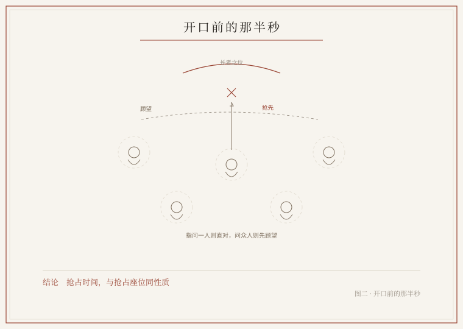

曲礼下 · 二·十 · 第 133 课
多人在侧，长者有问。指谁问谁，被指者直对即可；若问及众人，则须先环顾同座，看有没有比自己更该答的人，不可抢先开口。
说什么事：侍於君子，不顾望而对，非礼也。
落在哪一层：礼。回答之前的那个停顿，也是礼。
为何编在此位：此为曲礼下前段之末。自「凡奉者当心」起，讲的都是姿势、称呼、辞令；末一节讲的是一次「不开口」。
【经】侍於君子，不顧望而對，非禮也。
【注】禮尚謙也。不顧望，若子路帥爾而對。
【疏】谓多人侍而君子有问，若指问一人，则一人直对。若问多人，则侍者当先顾望坐中，或有胜己者宜前，而己不得率尔先对，先对非礼也。……此证问多人而不顾望对者。《论语》云，子路、曾晳、冉有、公西华侍於孔子，孔子问四人：「各言其志。」而子路率尔先对云：「原治千乘之国。」而孔子哂之云：「为国以礼，其言不让，是故哂之。」
侍 在侧陪坐，非平等相对。
君子 此处泛指有德位者，注疏皆以长者当之。
顾望 回顾、环视同座。不是看别处，是看有没有更该答的人。
对 答话。礼中之「对」，专指下答上。
帅尔 注作「帅尔」，《论语》作「率尔」。轻率、不加思索之貌。
非礼也 不是失态，是失礼。断语极重。
陪侍长者时，若不加环顾就抢先回答，是不合礼的。
礼在此管住了一件几乎不可见的事：开口之前的那一瞬。顾望，是把这一瞬让给别人；不顾望，是把这一瞬占为己有。抢占时间，与抢占座位同性质。
第一层 顾望是让贤 疏「或有胜己者宜前」。先看一圈，是给别人留出位置。
第二层 问一人与问众人的分野 指问一人则直对，不必环顾——礼不制造多余的谦让。问众人则须顾望。分寸在于「问」的指向，不在「答」的姿态。
第三层 率尔之对为何见哂 《论语》「其言不让」。孔子哂的不是内容，是那个「先」。此节与《论语》互证，可见这不是礼记一家的规矩。
第四层 时序即伦理 礼常被理解为空间之事（位次、高下）；此节提醒：时间也有位次。谁先说，谁说多少，都是位置。
与今日何干 会议里第一个抢答的人，往往不是在答问题，是在占位置。扫一眼全场再开口，只要半秒。
| 左 | 右 |
|---|---|
| 侍於君子 | 在侧陪坐，非平等 |
| 问一人则直对 | 礼不制造多余的让 |
| 问多人则顾望 | 或有胜己者宜前 |
| 不顾望而对 | 占的是时间之位 |
| 非礼也 | 断语，非失态 |
| 子路率尔而对 | 孔子哂其不让 |
画四位坐者的俯视剪影，围坐半圈，上方空出一席（示意长者之位，只画一道短弧）；其中一位坐者身旁画一道短促的直线指向上方空席，线端加一小撇（示意抢先）；另三位坐者之间以极淡的弧线相连，弧线自左向右缓缓扫过，示意环顾。四人身下各一小圆为席。不画人面、不写文字。赭色只用在最上方那道短弧上。
